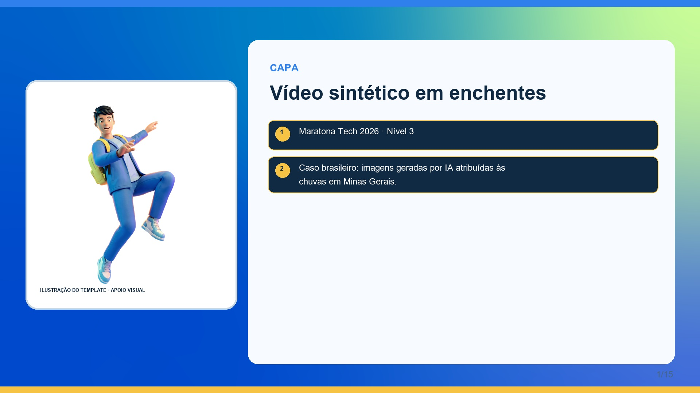
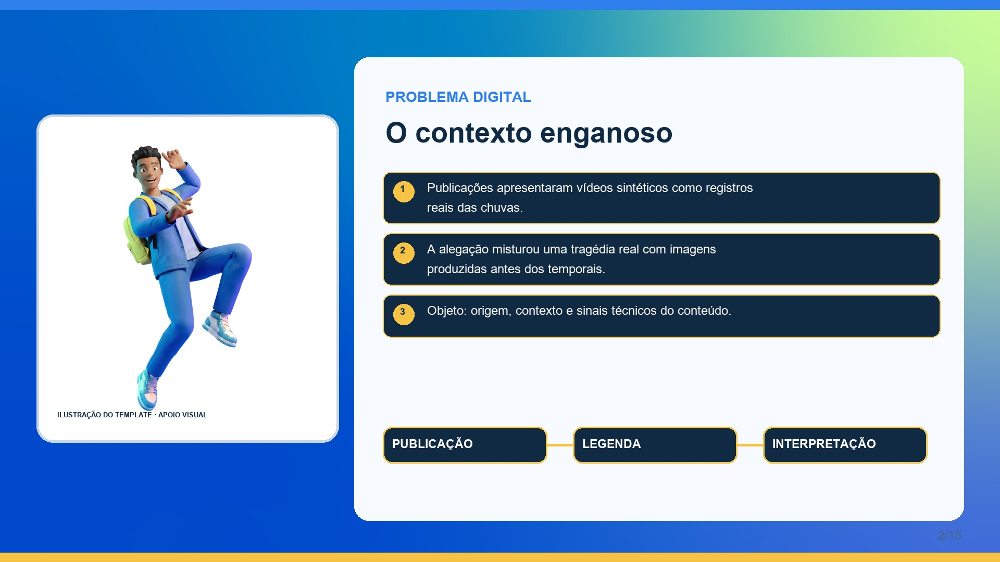
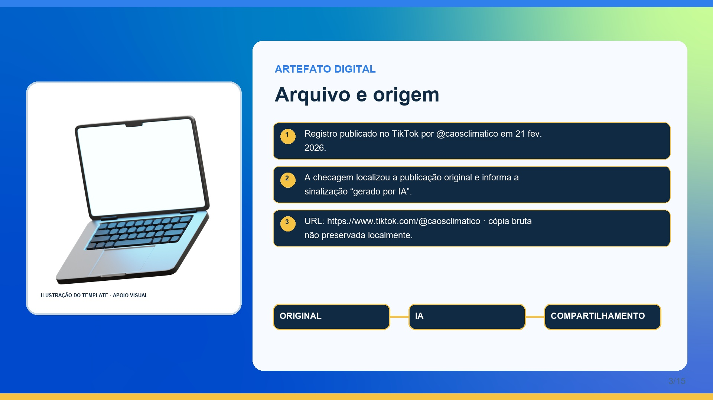
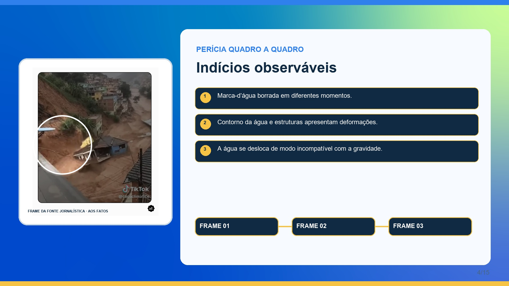
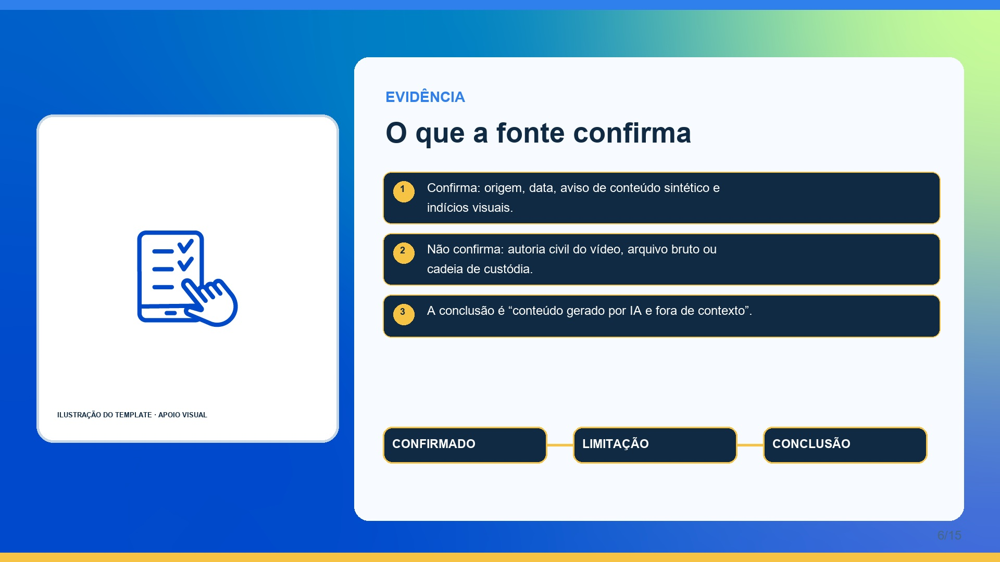
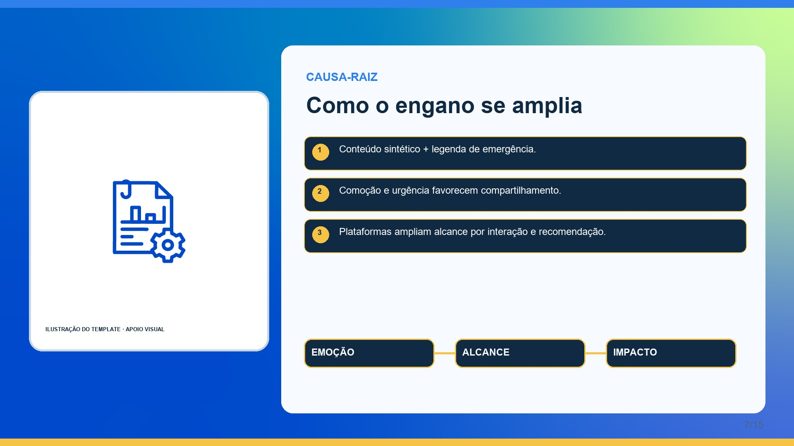
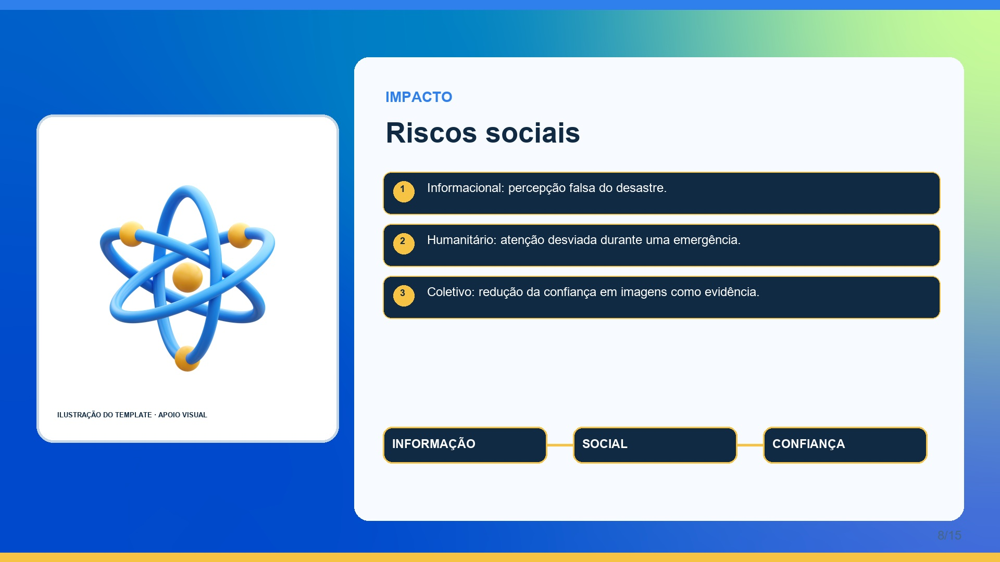
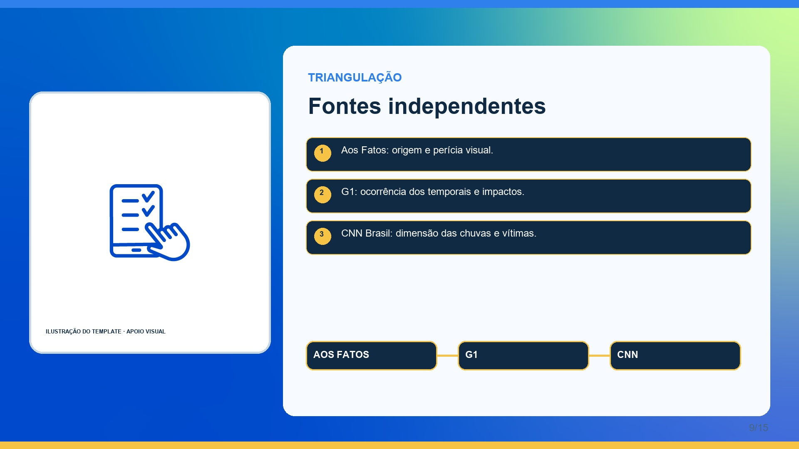
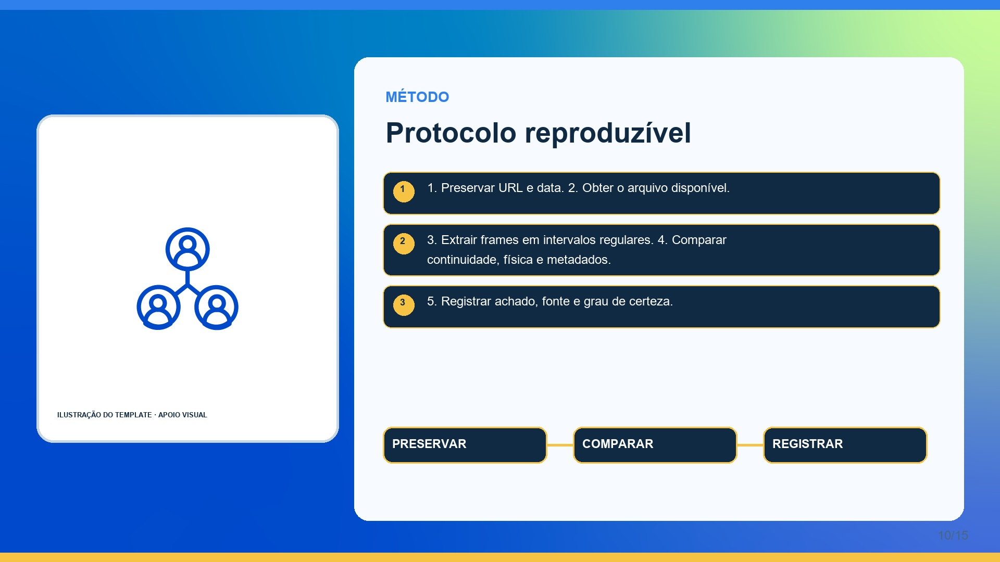
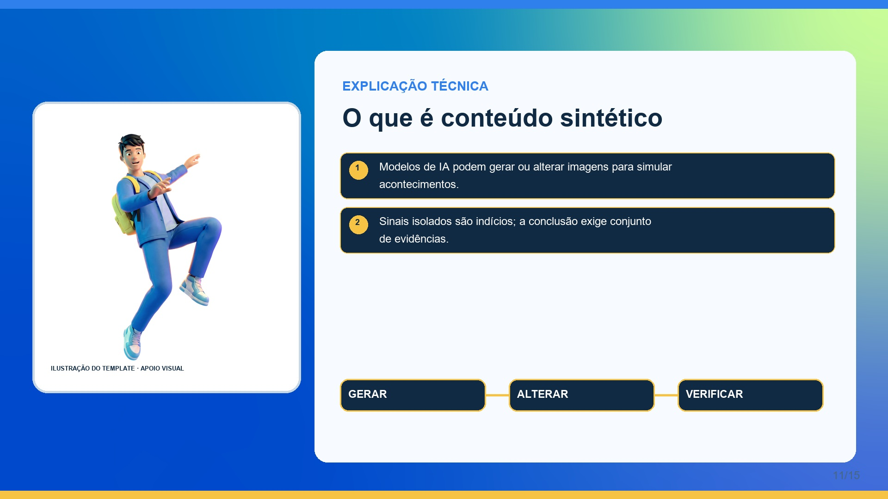
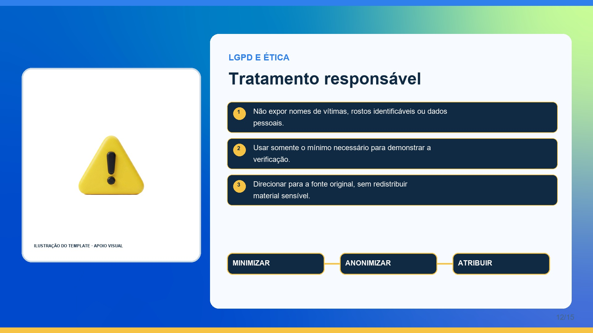
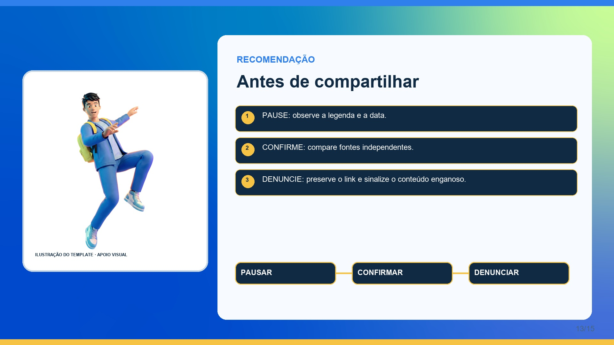
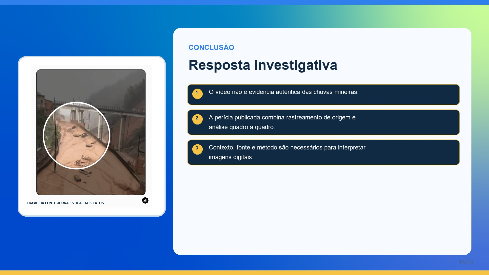
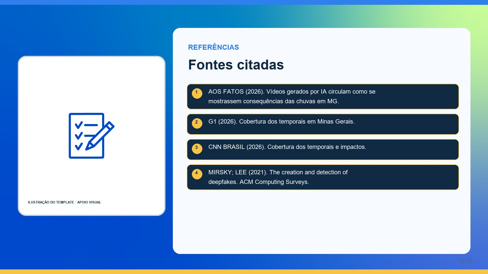














Os registros jornalísticos permanecem nos sites de origem por direitos autorais; os slides usam assets internos do PPTX e diagramas autorais.
Aos Fatos — checagem do caso e análise quadro a quadro · Publicação original referenciada — TikTok @caosclimatico